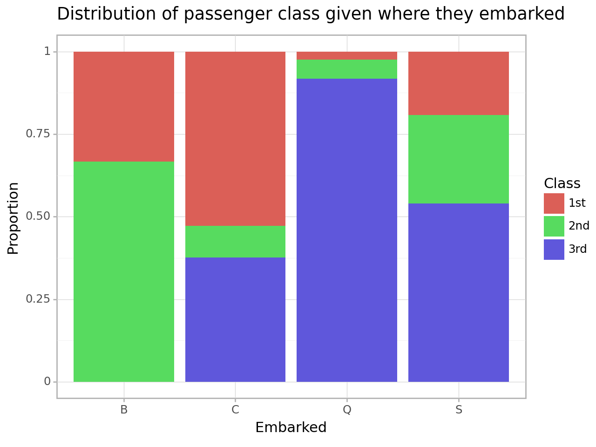

In this practice activity you’ll continue to work with the titanic dataset in ways that flex what you’ve learned about both data wrangling and data visualization.
import pandas as pddf_titanic = pd.read_csv('./titanic.csv')df_titanic.head()
name
gender
age
class
embarked
country
ticketno
fare
survived
0
Abbing, Mr. Anthony
male
42.0
3rd
S
United States
5547.0
7.11
0
1
Abbott, Mr. Eugene Joseph
male
13.0
3rd
S
United States
2673.0
20.05
0
2
Abbott, Mr. Rossmore Edward
male
16.0
3rd
S
United States
2673.0
20.05
0
3
Abbott, Mrs. Rhoda Mary 'Rosa'
female
39.0
3rd
S
England
2673.0
20.05
1
4
Abelseth, Miss. Karen Marie
female
16.0
3rd
S
Norway
348125.0
7.13
1
1. Filter the data to include passengers only. Calculate the joint distribution (cross-tab) between a passenger’s class and where they embarked.
import plotnine as p9plot = (p9.ggplot(data=ct, mapping=p9.aes(x='embarked', y='proportion', fill='class'))+ p9.geom_bar(stat='identity')+ p9.labs(title='Distribution of passenger class given where they embarked', x='Embarked', y='Proportion', fill='Class')+ p9.theme_light())plot.draw()

The visualization is easier to compare relative proportions, but doesn’t give the exact number.